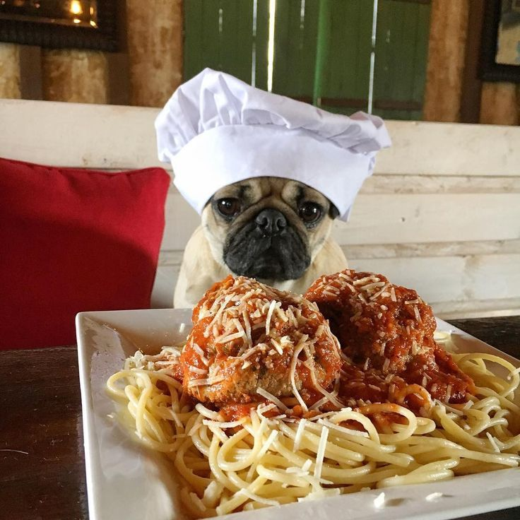

Правильное питание
Мопсы склонны к полноте, поэтому важно строго следить за их рационом. Если вы выбрали натуральное кормление, вот список разрешенных продуктов:
- Нежирное мясо (говядина, телятина, индейка)
- Морская рыба (без костей, отварная)
- Кисломолочные продукты (нежирный творог, кефир)
- Овощи (кабачок, тыква, морковь)
- Крупы (рис, гречка - в умеренных количествах)

Следите за порциями: мопсы готовы есть бесконечно.
|
Гигиена и уход за складками
Самое уязвимое место мопса на мордочке — это складочки. В них может скапливаться влага и грязь, что приводит к опрелостям и инфекциям. Процедуру очистки нужно проводить регулярно.
Пошаговая инструкция по чистке складок:
- Успокойте собаку, посадите ее удобно перед собой.
- Возьмите чистый ватный диск (не используйте вату).
- Смочите диск лосьоном для ухода за складками или хлоргексидином.
- Аккуратно приподнимите складку над носом большим пальцем.
- Осторожно протрите кожу внутри складки, удаляя загрязнения.
- Обязательный шаг: возьмите сухой ватный диск и протрите насухо!
|